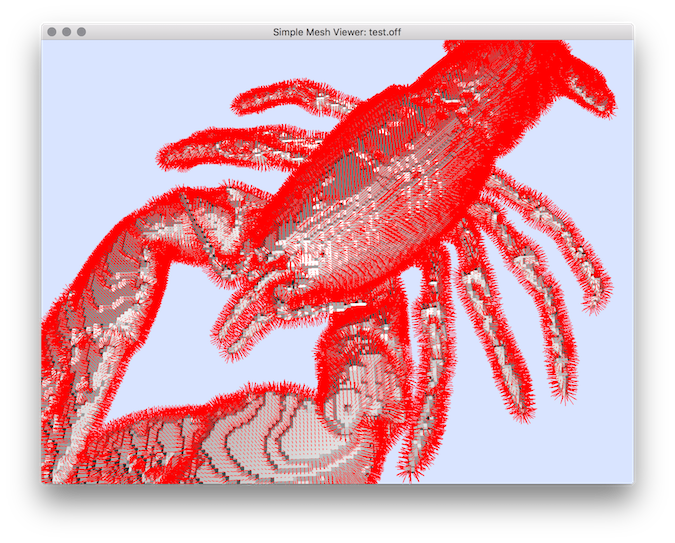

Generates normal vector field from a vol file using DGtal library.
It will output the embedded vector field (Gaussian convolution on elementary normal vectors) an OFF file, and a TXT normal vector file (theta, phi in degree).
Usage: vol2normalField[options] –input <volFileName> –o <outputFileName>
Allowed options are :
Positionals:
1 TEXT:FILE REQUIRED Input vol file.
2 TEXT REQUIRED Output file.
Options:
-h,--help Print this help message and exit
-i,--input TEXT:FILE REQUIRED Input vol file.
-o,--output TEXT REQUIRED Output file.
-l,--level UINT=0 Iso-level for the surface construction (default 0).
-s,--sigma FLOAT=5 Sigma parameter of the Gaussian kernel (default 5.0).
--exportOriginAndExtremity exports the origin and extremity of the vector fields when exporting the vector field in TXT format (useful to be displayed in other viewer like meshViewer).
-N,--vectorsNorm FLOAT=1 set the norm of the exported vectors in TXT format (when the extremity points are exported with --exportOriginAndExtremity). By using a negative value you will invert the direction of the vectors (default 1.0).
-n,--neighborhood UINT=10 Size of the neighborhood for the convolution (distance on surfel graph, default 10).
(distance on surfel graph).
Example:
We consider the generation of normal vector field from the Iso-level 40 and export the vectors with a norm = -3 (negative value to invert the normal direction).
$ vol2normalField -i $DGtal/examples/samples/lobster.vol -o lobTreshold40 -l 40 --exportOriginAndExtremity -N -3
You can use the too meshViewer to display the resulting vector field with the Iso-level surface:
$ meshViewer lobTreshold40.off -f lobTreshold40.txt --vectorFieldIndex 2 3 4 5 6 7 -n
You should obtain such a result:

Resulting vector field visualization.
- See also
- vol2normalField.cpp